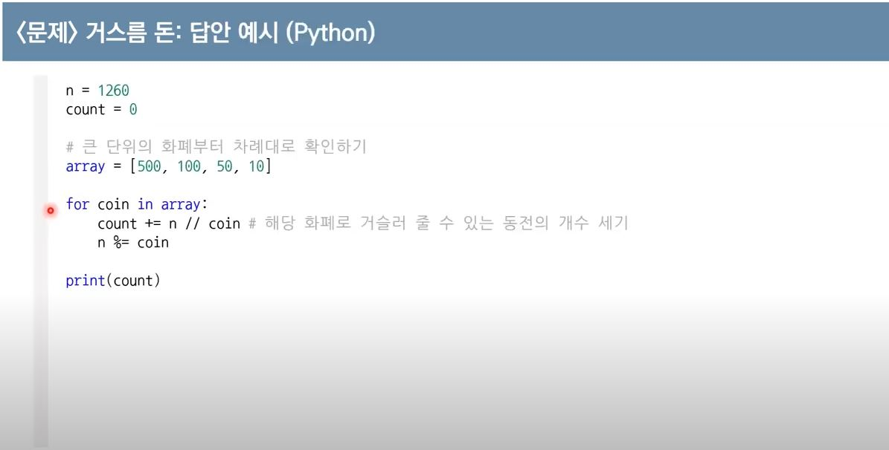

그리디 알고리즘은 단순하지만 강력한 문제 해결 방법이다. 이 알고리즘 유형은 국내 알고리즘 교재에서 단어 그대로 번역하여 탐욕법으로 소개된다. 이름에서 알 수 있듯이 어떠한 문제가 있을 때 단순 무식하게, 탐욕적으로 문제를 푸는 알고리즘이다. 여기서 탐욕적이라는 말은 현재 상황에서 지금 당장 좋은 것 만 고르방법' 을 의미한다.
그리디 알고리즘을 이용하면 매 순간 가장 좋아보이는 것을 선택하며, 현재의 선택이 나중에 미칠 영향에 대해서는 고려하지 않는다. 그리디 알고리즘은 기준에 따라 좋은 것을 선택하는 알고리즘이므로 문제에서 '가장 큰 순서대로','가장 작은 순서대로'와 같은 기준을 알게 모르게 제시해준다.
